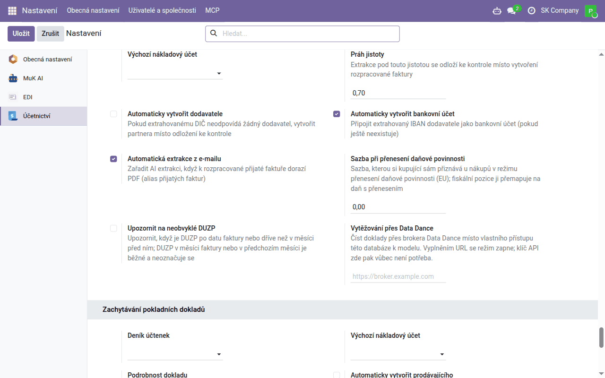

Návod k úloze
Vytěžování dokladů
Přijaté faktury vyplněné z PDF umělou inteligencí a účtenky přečtené z fotografie, slovenské i z QR kódu přes eKasu — co se vyplní samo, co je třeba zkontrolovat a jak z toho vznikne účetní doklad.
| Země | Česko a Slovensko |
|---|---|
| Edice | Odoo Community |
| Zahrnuje | account_invoice_ai_extract (dodává se samostatně), account_invoice_ai_extract_broker_client (dodává se samostatně), l10n_cssk_receipt_capture, l10n_sk_ekasa_receipt, l10n_cssk_receipt_capture_ai (dodává se samostatně), l10n_cssk_receipt_capture_expense |
Čtení pomocí umělé inteligence — přijatých faktur i fotografií účtenek — je dostupné jen v placené hostované službě Data Dance nebo jako modul ke koupi. Zachytávání slovenských účtenek přes eKasu (QR kód) je součástí bezplatných modulů.
K čemu tento návod slouží
Odoo umí doklady od dodavatelů přepsat samo:
| Doklad | Jak se čte | Kdo to zapíná |
|---|---|---|
| Přijatá faktura nebo dobropis v PDF | jazykový model přečte PDF; Odoo z přečteného vyplní koncept faktury | hostovaná služba: náš tým; jinak zakoupený modul |
| Česká účtenka, účtenka bez čitelného QR kódu | jazykový model přečte fotografii | hostovaná služba: náš tým; jinak zakoupený modul |
| Slovenská účtenka s QR kódem | QR kód se ověří ve slovenském systému eKasa, který vrátí doklad i s položkami | vy — bezplatné moduly z Aplikací |
Ve všech případech platí stejné rozdělení práce: model nebo eKasa jen čte, Odoo rozhoduje (dodavatele, daně, kontrolu součtů a duplicit) a zaúčtujete vy — výsledkem je vždy koncept.
Při čtení umělou inteligencí opustí databázi celý soubor dokladu a odešle se službě Data Dance pro vytěžování (v hostované službě), nebo poskytovateli jazykového modelu, kterého si u zakoupeného modulu nastavíte sami v MuK AI se svým klíčem API. Nic jiného z databáze (partneři, účty, jiné doklady) se neodesílá.
Přijaté faktury
Jen v placené hostované službě nebo se zakoupeným modulem.
Nastavení
V hostované službě čtení zapne náš tým; u zakoupeného modulu zadáte klíč API poskytovatele modelu v MuK AI → Configuration → Providers. Potom zkontrolujte v Účetnictví → Konfigurace → Nastavení, blok AI extrakce faktur:
| Nastavení | Co nastavit |
|---|---|
| Nákupní deník | deník, do kterého přijdou faktury vytvořené čtením |
| Výchozí nákladový účet | účet řádků; prázdné = obvyklý účet dodavatele, pak účet deníku |
| Práh jistoty | čtení, která model sám hodnotí níže (výchozí 0,7), se odloží ke kontrole |
| Automaticky vytvořit dodavatele | vypnuto: neznámý dodavatel se odloží ke kontrole; zapnuto: vytvoří se |
| Automaticky vytvořit bankovní účet | přidá dodavateli IBAN vytištěný na faktuře — vypněte, pokud bankovní účty dodavatelů nejprve ověřujete |
| Automatická extrakce z e-mailu | faktura, která přijde e-mailem, se přečte sama |

Které nákupní dani odpovídá vytištěná sazba, určuje Účetnictví → Konfigurace → AI: mapování DPH faktur — po instalaci je vyplněné pro sazby, které má vaše účtová osnova; zkontrolujte ho.
U českého dodavatele s platným IČO doplní oficiální název, sídlo a DIČ z
registru ARES doplněk
account_invoice_ai_extract_ares_cz (dodává se samostatně),
pokud je nainstalovaný.
Jak faktura přijde
- E-mailem: nastavte nákupnímu deníku e-mailový alias (karta Pokročilá nastavení deníku) a dejte ho dodavatelům. Každé PDF v e-mailu se stane konceptem faktury a přečte se.
- Ručně: vytvořte koncept přijaté faktury, přiložte PDF a klikněte na Extrahovat pomocí AI.
Čtení běží na pozadí (obvykle do pěti minut).
Výsledek
Všechna čtení jsou v Účetnictví → Dodavatelé → AI extrakce faktur, z faktury vede ke čtení tlačítko AI extrakce:
| Stav | Význam |
|---|---|
| Vyřešeno | koncept faktury je vyplněný |
| Ke kontrole | částky nesedí, jistota je pod prahem nebo se nenašel dodavatel; důvod je uvedený |
| Duplicita | faktura téhož dodavatele se stejným číslem už existuje |
| Chyba | důvod je uvedený; po nápravě Spustit znovu |
Vyplní se dodavatel (podle DIČ, IČO, názvu s právní formou nebo IBAN), číslo faktury jako reference, data včetně DUZP, variabilní, konstantní a specifický symbol, řádky (nebo řádek za každou sazbu DPH, pokud detail nelze sladit), daně podle mapování sazeb a fiskální pozice dodavatele a DPH za každou sazbu přesně podle rekapitulace na faktuře.
Před zaúčtováním zkontrolujte
- dodavatele — zejména pokud historie faktury uvádí, že se našel podle názvu nebo IBAN, nebo byl vytvořen;
- nové bankovní účty dodavatele a účet příjemce platby;
- DUZP — určuje období odpočtu DPH;
- nákladový účet a daň každého řádku a přenesení daňové povinnosti tam, kam patří;
- každé hlášení ⚠ v historii a součet vůči částce k úhradě.
Potom fakturu zaúčtujte jako kteroukoli jinou.
Účtenky
Nastavení
- Z Aplikací nainstalujte Fiscal Receipt Capture — Shared Framework; pro slovenské účtenky Slovak eKasa Receipt Capture, a pokud účtenky odevzdávají zaměstnanci jako výdaje, i Fiscal Receipt Capture — Employee Expenses. V seznamu aplikací mají moduly anglické názvy, po instalaci jsou jejich obrazovky česky.
- Účetnictví → Konfigurace → Nastavení, blok Zachytávání pokladních dokladů: Deník účtenek (nákupní deník účtenek) a Výchozí nákladový účet (bez něj se doklad z účtenky nevytvoří).
- Jen pro slovenské účtenky: blok Vyhledávání slovenských dokladů eKasa, zapněte Povolit vyhledávání v eKase. Systém eKasa odpovídá jen z IP adresy oznámené slovenskému finančnímu ředitelství (§ 18 odst. 11 slovenského zákona o evidenci tržeb): po oznámení zaškrtněte Oznámená IP adresa (§ 18/11). V hostované službě Data Dance je to adresa našeho serveru — oznámení s vámi vyřídí náš tým.
Zachycení účtenky
Účetnictví → Dodavatelé → Účtenky:
- Naskenovat účtenku otevře kameru — u slovenské účtenky naskenujte QR kód přímo nad textem OVERTE DOKLAD POMOCOU QR KÓDU (ne kód věrnostní aplikace);
- nebo v Zachycené účtenky → Nový přiložte fotografii (Zdrojový obrázek) a klikněte na Zachytit.
Slovenskou účtenku vrátí eKasa tak, jak ji zaevidovala pokladna; českou přečte jazykový model z fotografie (níže). Účtenka je pak Zachyceno; pokud některá kontrola nesedí (součty, sazby, duplicita), je Ke kontrole s důvodem — všechny takové jsou v nabídce Ke kontrole.
Prodávající se hledá podle DIČ a IČO, nikdy podle názvu; nového vytvoříte tlačítkem Vytvořit prodávajícího.
Účetní doklad
Vytvořit nákupní účtenku vytvoří koncept nákupní účtenky s jedním řádkem za každou sazbu DPH na výchozí nákladový účet a s fotografií. Zkontrolujte ho a zaúčtujte.
Účtenka nad limitem zjednodušeného daňového dokladu (10 000 Kč, na Slovensku 400 €) to uvede a její DPH se zaúčtuje do nákladu; máte-li na nákup řádnou fakturu, zaškrtněte Máme řádnou fakturu.
Účtenka, kterou zaměstnanec platil vlastními penězi, patří do výdajů: Vytvořit výdaje vytvoří výdaj pro zaměstnance, nebo zaměstnanec účtenky nahraje sám v Výdaje → Mé výdaje (Naskenovat účtenku, Moje účtenky).
Čtení fotografie
Jen v placené hostované službě nebo se zakoupeným modulem.
Českou účtenku, nebo slovenskou, jejíž QR kód z fotografie nelze přečíst, přečte jazykový model. U slovenské účtenky model přečte i identifikátory vytištěné u kódu a Odoo je ověří v eKase; pokud eKasa doklad najde a částka sedí, nahradí její údaje přečtené. Zachycená účtenka má kartu Čtení pomocí AI s jistotou a poznámkami modelu.